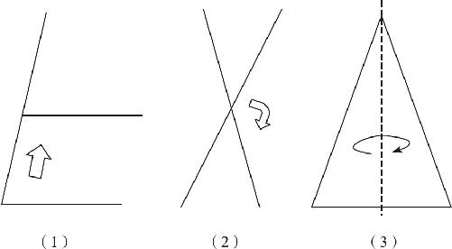
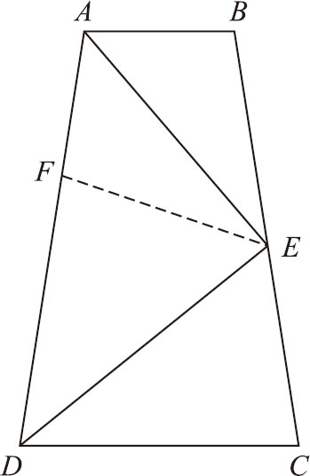
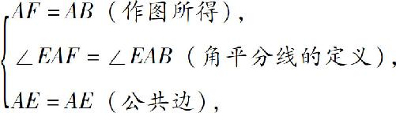
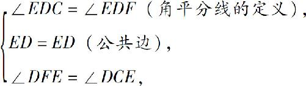

在此介绍一下几何证明的第二个要点：动态看图．所谓动态看图，有两层含义：
第一是避免机械地、静态地看图，避免发生误会．我们知道，几乎所有的几何证明题都要依赖于图形，图形可以让我们直观地看到题目中的条件．同时，看图的时候，也容易发生误会．
什么样的误会呢？比如有两个角明明在已知条件中是不相等的，可是因为图形中两者相差很小，做题时就很容易发生误会，把两个角相等当作一个已知条件去用．其他条件也是类似的：两边的长度容易看错，两条直线垂直、平行也容易看错，甚至两个三角形全等也很容易看错．如何解决这类问题呢？必须多画几张图．
几何学研究的是没有数字的数学．绝大多数证明题都可以画出无数张图来，比如：题目让你证明三角形的内角和等于180°，你画一个什么模样的三角形都可以，第一次画个锐角三角形，第二次就画个直角三角形．如果一个题目很复杂，常常要画十几张图才能解决，因为我还得经常在图上勾勾画画：两个角相等需要做标记，两边相等也需要做标记，还会时不时地增加两条辅助线，很快一张图变得乱七八糟了，此时只要再画一张就可以了．而且，为了避免发生误会，我们在画每一张图的时候，最好和上一张有所区别，无论是长度还是角度，稍微改变一点，效果就不同了．解题思路往往在画图的过程中就找到了．这是因为，虽然我们画的每张图都不同，但是在其中总是有相同的东西，当我们回顾这些内容的时候，往往就会捕捉到那些最有价值的相同点，最终的解题思路就找到了．
对于第一层意思，还可以用另一种方式来解释——我们可以用运动的观点去看图．虽然几何图形本身是静态的，但是我们要知道，图形中哪些部分是可以活动的，哪些地方是不能动的，这样的思维方式相当于把图形上的点和线，想象成了钉在一起的棍子，如果棍子的长度可以变化，还可以把它想象成橡皮筋．如果在头脑中能把静态的图转变成动态图，就能迅速捕捉到隐藏在变化中的静止不变的核心内容．这就是动态看图的第一层意思．
动态看图的第二层意思是，要把图形中相等的部分或者全等的部分，想象成动态运动的结果．由第一公理可知：相互覆盖的两个图形全等．从这个公理出发，不妨这样理解：两个全等的图形就是一个东西被挪到了另一个位置．比如：平行线里的同位角，就可以看作是其中一个角沿着一条直线平移到另一个地方去的结果，小学的时候就是通过平移三角板的方式来画平行线的．同时，两个对顶角也可以理解为是原来的角在顶点不变的条件下，旋转了180°得到的．在等腰三角形中，可以把垂线、中线、角平分线三线合一的结果，当作等腰三角形的一个对称轴，将它的一半翻转180°，就可以得到另一半．以上这些方法，就是动态看图的第二层含义．（如图8－2所示）

图8－2
如果我们看到的几何图形符合平移、旋转和翻转的关系，就可以认为这两个图形全等．不过要注意一点，这种方式只是为了帮助我们快速理解问题、寻找思路．在几何学里并没有所谓的“平移定理”“对称定理”和“旋转定理”，即使通过这种方式发现了三角形全等，仍然需要用三角形的那几条定理去证明，只不过通过动态看图的方式，可以快速发现图形关系．
接下来，我们继续分析一个证明题：如图8－3所示，在梯形ABCD 中，AB ∥CD ，AE 平分∠DAB ，DE 平分∠ADC ，且AE 、DE 的交点E 恰好处于BC 上，求证：AD ＝AB ＋DC ．

图8－3
如果你在纸面上画出这张图来，就会发现，这个过程并不容易：要想让左边这两个角的平分线相交以后，交点正好在右边的腰上，相当复杂．我们在画图的时候，不能先画好了梯形，再去作角平分线，而应该先把左边的部分全部画好了，两条角平分线也画出来了，最后再经过角平分线的交点，去画出右边的那条腰．当然，右边的腰画歪点没关系，只要它经过平分线的交点就是符合题意的．为什么要讨论画图的过程呢？因为这就是在动态看图．在这个图中，梯形上下底平行是必须的，角平分线是必须的，其他的元素则可以见机行事．
一看见角平分线，我们就应该产生让图形运动起来的想法了．怎么运动呢？翻转！既然是角被平分了，那么我们把它翻转过来，肯定是可以重合的，于是我们就可以在平分线的另一侧，作出一个全等的图形来，具体的证明过程如下：
在AD 上截取一点F ，使AF ＝AB （这样我们就找到了B 的一个对称点），连结EF ，在△AFE 和△ABE 中：

∴△AFE ≌△ABE （边角边），
∴∠AFE ＝∠B （全等三角形的对应角相等）．
∵AB ∥CD （已知），
∴∠B ＋∠C ＝180°（两直线平行，同旁内角互补），
∴∠C ＝180°－∠B ＝180°－∠AFE ，
又∵∠DFE ＝180°－∠AFE ，
∴∠DFE ＝∠C ．
在△DEF 和△DEC 中：

∴△DEF ≌△DEC （角边角），
∴DF ＝DC （全等三角形的对应边相等），
∴AD ＝AF ＋DF ＝AB ＋DC （等量代换）．